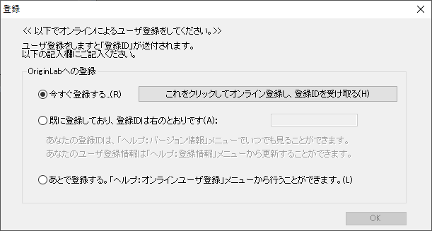

バージョン2019以前のドングル（ハードウェアキー）版
Dongle-LIC
ドングル（ハードウェアキー）でOriginを起動
- ドングルのシリアル番号でOriginをインストールします。
- ドングルをUSBポートに差し込みます。
- 初回は、Originのアイコンで右クリックし、『管理者として実行』を選択してOriginを開きます。
- 登録ダイアログが開きます。登録は必須ではありませんが、より良いサポートをご提供するために役立ちます。
Originを登録するには、
- これをクリックしてオンライン登録し、登録IDを受け取るボタンをクリックします。

- OriginLabのウェブサイトがブラウザで開きます。ログインまたはアカウントを作成します。
- 登録IDが作成されます。このIDをコピーし、Originに戻って貼り付けます。
この時、登録を行いたくない場合には、あとで登録するを選択します。次にOriginを起動する際、OriginLab登録ダイアログが開きリマインドします。
関連項目
FAQ-711 ドングル（ハードウェアキー）のドライバのエラーメッセージやメモ帳が表示され、ライセンスを入力するよう要求されます。何が悪いのでしょうか?